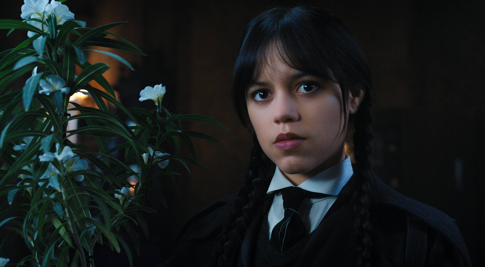

Què és CritiCine?
CritiCine és una pàgina web que té com a objectiu d’arribar a aquells usuaris que vulguin participar en la votació dels Premis CritiCine. Aquests premis són de pel·lícules, sèries i actors/actrius de l’any, i es recullen els vots del públic per poder donar el premi a la millor pel·lícula i millor sèrie de l’any, així com un rànquing dels millors actors i actrius de cada un d’aquests.
A la web es poden veure nominacions a 5 sèries i 5 pel·lícules, amb la seva respectiva informació de cadascuna, i també les diferents nominacions d’actuació.
EDICIONS
| EDICIÓ 2021 | |
|---|---|
| Premi a la millor pel·lícula | The Unforgivable, per Nora Fingscheidt |
| Premi a la millor sèrie | Squid Game, per Hwang Dong-hyuk |
| Premi als millors actors i actrius | Yvonne Strahovski, a The Handmaid's Tale |
| Benedict Cumberbatch, a The Power of the Dog | |
| Margaret Qualley, a Maid | |
| EDICIÓ 2022 | |
|---|---|
| Premi a la millor pel·lícula | Everything Everywhere All At Once, per Daniel Kwan i Daniel Scheinert |
| Premi a la millor sèrie | Stranger Things, per Shawn Levy, Matt Duffer i Ross Duffer |
| Premi als millors actors i actrius | Brendan Fraser, a The Whale |
| Jenna Ortega, a Wednesday | |
| Paul Mescal, a Aftersun | |
Galeria d'imatges
The Unforgivable - 2021
Squid Game - 2021
Yvonne Strahovski, a The Handmaid's Tale - 2021

Benedict Cumberbatch, a The Power of the Dog - 2021
Margaret Qualley, a Maid - 2021
Everything Everywhere All At Once - 2022

Stranger Things - 2022
Brendan Fraser, a The Whale - 2022
Jenna Ortega, a Wednesday - 2022
Paul Mescal, a Aftersun - 2022